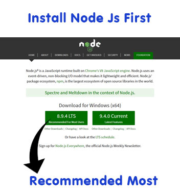
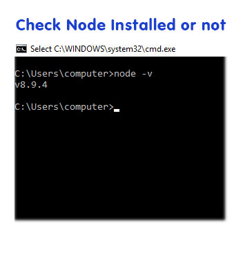
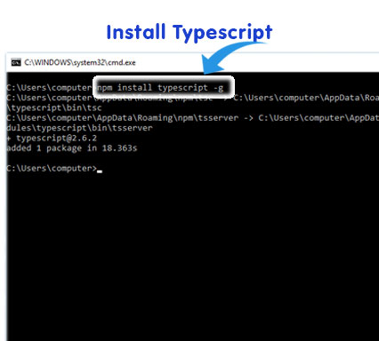
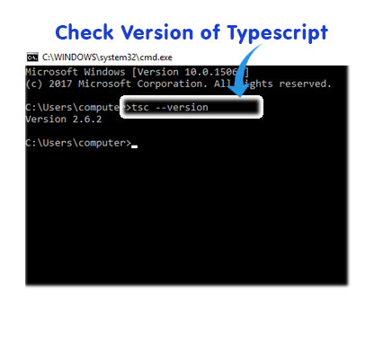

1. Both the CLI and generated project have dependencies that require Node 6.9.0 or higher, together with NPM 3 or higher.

2. Check Node installed or not, Run "node -v" in window command tool

3. Typescript is a compiled language which will generate JavaScript on compile.Generated JavaScript will be same traditional JavaScript code. To make it simple, "We will write our code in TypeScript. Compile it and generate the JavaScript and simply use that auto-generated JavaScript in our HTML instead of manually writing JavaScript."

4. Check Typecript installed or not with "tsc --version" command

Previous Next